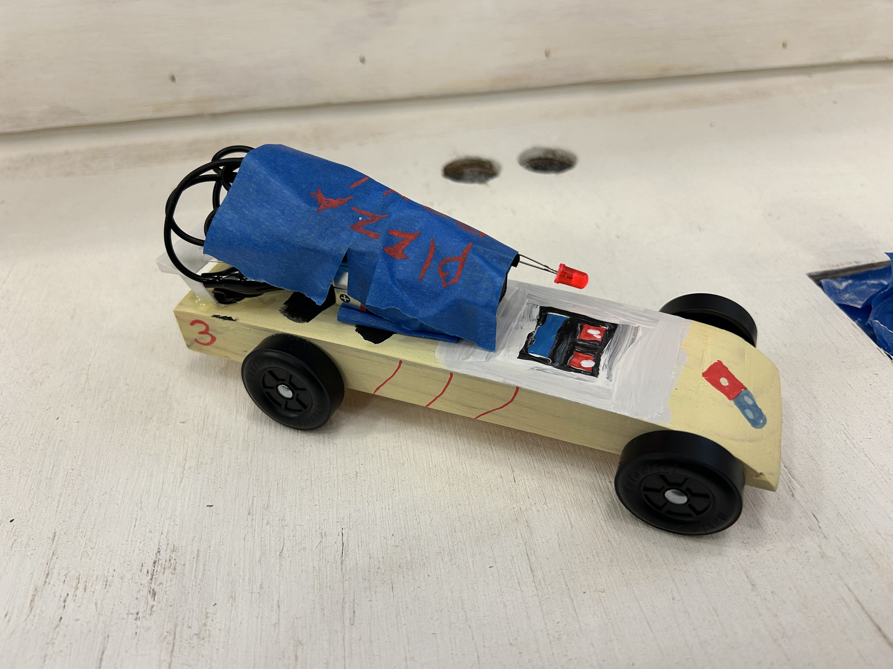

Carved, weighted, and painted a pinewood derby car for a class competition at UConn, optimizing for speed through weight placement and low friction. The car ran with a cream and yellow paint scheme, a red LED, and "PIZZA" in blue tape, numbered 3.
UNIV 1810 was a first-year seminar at UConn. The pinewood derby project gave each student a standard pine block and a set of wheels and axles to work with. The main constraint was a maximum weight limit, which meant every design decision involved a tradeoff between removing material to reduce weight and adding it back strategically to optimize the center of mass.
My goal going in was to build something that was fast but also looked like something I actually wanted to race. Speed first, aesthetics second, but both mattered.

finished car, number 3, cream and yellow with blue tape lettering and red LED
The block was carved and sanded into a low wedge profile. A lower center of mass generally helps with stability and speed on a gravity-fed track, so removing material from the top and front while keeping the rear heavier was the main shaping strategy.
Weight was added toward the rear of the car to shift the center of mass back, which gives the car more momentum as it transitions from the angled drop to the flat section of the track.
The axles were polished and the wheel hubs were sanded to reduce friction as much as possible. Graphite lubricant was applied to the axle grooves before the final assembly.
For finishing, the car was painted cream and yellow. The name "PIZZA" was added in blue painter's tape, and a small red LED was wired in and mounted to the body as a detail. Car number 3.
The car ran well and placed competitively in the class race. The rear weight placement worked as expected and the car tracked straight down the lane without much drift. The LED was a purely cosmetic choice but it was worth it.
If I did it again I would spend more time on the axle polish since that seemed to be where a lot of the faster cars had an edge.